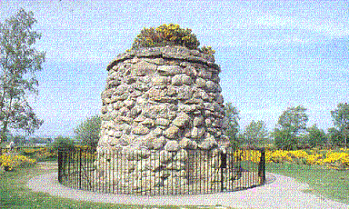
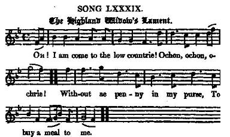

The Highland Widow's Lament
Complainte de la veuve des Highlands
by Robert Burns, Scots Musical Museum, Vol. V, N°498, page 514, 1796
Tune - Mélodie"Ochon, ochon, och ri, e"
from SMM 498 and Hogg's "Jacobite Relics" 2nd Series N°89, page 174
Sequenced by Ch.Souchon


|
To the tune:
The tune and Gaelic burden of this lament are taken from another song, from which the present poem was derived and adapted to the Culloden tragedy. It is to be found on a manuscript "A Choice Collection of several Scots Miscellanies of Poems and Songs" dating ca 1715. Robert Burns included it as "Ochon och ri E!" i.e. " Ochoin a righ!: Alas for the chief!" or "the Border's widow's lament" , under No. 89, in vol. I of the Museum, 1787. He wrote the following note to be found in the "Interleaved Museum": 'Dr. Blacklock informed me that this song was composed on the infamous massacre at Glencoe ' . The same song N°89, as well as two variants thereof, are quoted in Francis J. Child's (1825-1896) "English & Scottish Popular Ballads" in a comment to the long ballad N° 106, titled "The Famous Flower of Serving Men" , by Laurence Price, dating back to 1656. Robert Schumann was impressed with the simple phrases of Burns's lyrics and took them as the theme of an original composition for the verses of Burns. It is in his Liederkreis, Op. 25 , (here sung by Edith Mathis). Source "The Fiddler's Companion" (cf. Liens). |
A propos de la mélodie:
La mélodie et le refrain gaélique de cette complainte sont tirés d'un autre chant qui inspira ce texte sur la tragédie de Culloden. On trouve ce chant sur un manuscrit datant de 1715 environ, intitulé "Sélection de diverses miscellanées de poèmes et chants écossais" . Robert Burns l'a introduit sous le titre "Ochon Och ri E!" ("Ochoin a righ!","Hélas O Chef!") ou "Lamentation de la veuve du Border" sous le N°89 dans le volume I du "Musée Musical écossais" (1787). Il indique dans une note du "Musée interfolié" que, 'selon le Dr Blacklock, cette ballade traite en réalité de l'ignoble Massacre de Glencoe . Ce chant N°89 ainsi que deux autres variantes sont rapprochés dans l'ouvrage de Francis J. Child (1825-1896) "Ballades populaires anglaises et écossaises" d'une longue ballade intitulée, sous le N° 106, "La fameuse perle des valets" de Laurence Price, datant de 1656. Robert Schumann , impressionné par la simplicité tragique des vers de Burns, fit de la "Complainte de la Veuve des Highlands" le thème d'une composition originale qui fait partie de son "Liederkreis", Op. 25 (ici interprêtée par Edith Mathis) Source "The Fiddler's Companion" (cf. Liens). |
|
To the lyrics:
William Motherwell in the "Works of Robert Burns" (Glasgow, 1835) notes :"I do not know on what authority Mr Cunningham assigns this Jacobite song to Burns. For we have heard old ladies sing it, who remember its existence anterior to the poet's time." The present 11 verse version is found in G.S. McQuoid's "Jacobite Songs and Ballads" (1887), with a note to the effect that: - the song is partly ancient and partly modern. - Burns added the fifth, sixth, and seventh verses. - the eighth, ninth, and tenth are by Allan Cunningham . - and the last is from the pen of the Ettrick Shepherd, James Hogg . |
A propos des paroles:
William Motherwell dans les "oeuvres de Robert Burns" (Glasgow, 1835) note :"Je ne sais pas ce qui autorise M. Cunningham à attribuer ce chant Jacobite à Burns. En effet, nous l'avons entendu chanté par de vieilles dames qui se souviennent qu'il existait avant que le poète ne commence à écrire." La présente version qui comporte 11 couplets se trouve dans les "Chants et ballades Jacobites" de G.S. McQuoid (1887), avec une note qui indique que: - le chant est en partie ancien et en partie récent. - Burns a ajouté les couplets 5, 6, 7. - les couplets 8, 9 et 10 sont d' Allan Cunningham . - et le dernier est de la plume du Berger d'Ettrick, James Hogg . |

|
1. Oh I come to the low Country,
Ochon, Ochon, Ochrie, Without a penny in my purse, To buy a meal to me. 2. It was na sae in the Highland hills Ochon, Ochon, Ochrie, Nae woman in the Country side, Sae happy was as me. 3. For then I had a score o' kye Ochon, Ochon, Ochrie, Feeding on yon hills sae high, And giving milk to me. 4. And there I had three score o'yowes, Ochon, Ochon, Ochrie, Skipping on yon bonnie knowes And casting wool to me. 5. I was the happiest of all the Clan,, Sair, sair may I repine; For Donald was the brawest man, And Donald he was mine. 6. Till Charlie Steward came at last Sae far to set us free; My Donald'arm was wanted then, For Scotland and for me. 7. Their woeful fate what need I tell, Right to the wrong did yield; My Donald and his country fell, Upon Culloden field. 8. I have nocht left me now ava, Ochon, ochon, ochrie, But bonnie orphhan lad-weans twa, To seek their bread wi' me. 9. But I ha'e yet a tocher-band Ochon, ochon, ochrie, My winsome Donald's durk and brand, Into their hands to gie. 10. And still a blink of hope is left, To lighten my auld e'e; To see my bairns gie bluidy crowns To them gart Donald die. 11. Oh I am come to the low country, Ochon, Ochon, Ochrie, Nae woman in the world wide So wretched now as me. |
1. Me voici dans le Pays Bas
Accablée de reproches:, Et n'ai pour payer mon repas Pas un sou dans ma poche. 2. Quand j'habitais le Haut Pays, Pourquoi tant de misère? Aucune autre n'était aussi Fière que moi sur terre. 3. Car plus de vingt vaches j'avais, Hélas, je perd courage! Et elles me donnaient leur lait, Paissant sur nos alpages 4. Et j'avais soixante brebis Mon Dieu, j'ai tant de peine! Qui gambadaient dans les prairies Et me donnaient leur laine. 5. J'étais la plus heureuse au clan Ah, plaignez ma pauvre âme! Donald était le plus vaillant, Et moi jétais sa femme. 6. Quand Charles Stuart vint céans, De loin, briser nos chaines, Donald s'engagea dans ses rangs, Pour l'Ecosse et moi-même. 7. On connaît leur sort malheureux, Le droit cède à la haine. Donald et l'Ecosse tous deux Meurent à Culloden! 8. On ne m'a donc laissé plus rien, Profonde est ma déchéance, Hormis deux garçons, deux orphelins Cherchant avec moi leur pitance. 9. Il me reste de mon mari Cependant un héritage: Sa dague et son épée que voici Qu'ils auront quand en viendra l'âge. 10. Demeure une lueur d'espoir, Mes ténèbres elle éclaire, Que mes yeux puissent un jour les voir Tuer les assassins de leur père. 11. Me voici donc au Bas Pays, Plaignez mon sort lamentable! Il n'est au monde femme qui Soit aussi misérable. (Trad. Ch.Souchon(c)2004) |
1. Ich bin gekommen ins Niederland,
o weh! So ausgeplündert haben sie mich, daß ich vor Hunger vergeh! 2. So war's in meinem Hochland nicht; o weh! Ein hochbeglückter Weib, als ich, war nicht auf Tal und Höh! 3. Denn damals hatt' ich zwanzig Küh'; o weh! Die gaben Milch und Butter mir, und weideten im Klee. 4. Und sechzig Schafe hatt' ich dort; o weh! Die wärmten mich mit weichem Fliess bei Frost und Winterschnee. 5. Es konnte kein' im ganzen Clan sich grössern Glückes freu'n; denn Donald war der schönste Mann, und Donald, der war mein! 6. So blieb's, so blieb's, bis Charlie Stuart kam, Alt-Schottland zu befrei'n; da mußte Donald seinen Arm ihm und dem Lande leih'n. 7. Was sie befiel, wer weiß es nicht? Dem Unrecht wich das Recht, und auf Cullodens blut'gem Feld erlagen Herr und Knecht. 11. O! Daß ich kam ins Niederland! o weh! Nun gibt's kein unglücksel'ger Weib vom Hochland bis zur See! Übersetzt von Wilhelm Gerhard . Vertönt von Robert Schuman (1810-1856): "Die Hochländer-Witwe", op. 25 N° 10 (1840) in "Myrten" N°10 |